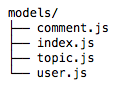
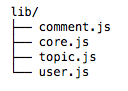

因为我们的论坛很简单，所以设计 users、topics 和 comments 三个集合即可满足需求，其中 users 集合用来存储用户信息，topics 集合用来存储话题信息，comments 集合用来存储话题的评论。构建 models 目录结构如下：

我们使用 mongoose 的 Schema 来定义我们的数据模型，对应文件修改如下：
user.js
var mongoose = require('mongoose');
var Schema = mongoose.Schema;
var UserSchema = new Schema({
name: { type: String, required: true },
email: { type: String, required: true},
password: { type: String, required: true },
gender: { type: String, required: true },
signature: { type: String },
created_at: { type: Date, default: Date.now },
updated_at: { type: Date, default: Date.now }
});
UserSchema.index({name: 1});
module.exports = mongoose.model('User', UserSchema);
topic.js
var mongoose = require('mongoose');
var Schema = mongoose.Schema;
var TopicSchema = new Schema({
user: {
name: { type: String, required: true },
email: { type: String, required: true }
},
title: { type: String, required: true },
content: { type: String, required: true },
tab: { type: String, required: true },
pv: { type: Number, default: 0 },
comment: { type: Number, default: 0 },
created_at: { type: Date, default: Date.now },
updated_at: { type: Date, default: Date.now }
});
TopicSchema.index({tab: 1, updated_at: -1});
TopicSchema.index({'user.name': 1, updated_at: -1});
module.exports = mongoose.model('Topic', TopicSchema);
comment.js
var mongoose = require('mongoose');
var Schema = mongoose.Schema;
var ObjectId = Schema.ObjectId;
var CommentSchema = new Schema({
topic_id: { type: ObjectId, required: true },
user: {
name: { type: String, required: true },
email: { type: String, required: true }
},
content: { type: String, required: true },
created_at: { type: Date, default: Date.now },
updated_at: { type: Date, default: Date.now }
});
CommentSchema.index({topic_id: 1, updated_at: 1});
module.exports = mongoose.model('Comment', CommentSchema);
我们根据需求添加了合理的索引，比如可以通过版块名（tab） 或用户名（user.name）按时间降序查找话题，则 topics 集合添加了对应的索引：
TopicSchema.index({tab: 1, updated_at: -1});
TopicSchema.index({'user.name': 1, updated_at: -1});
最后，通过 index.js 导出以供其他模块调用：
index.js
var mongoose = require('mongoose');
var config = require('config-lite').mongodb;
mongoose.connect(config.url, function (err) {
if (err) {
console.error('connect to %s error: ', config.url, err.message);
process.exit(1);
}
});
exports.User = require('./user');
exports.Topic = require('./topic');
exports.Comment = require('./comment');
接下来我们根据需求定义对应的模型函数，构建 lib 目录结构如下：

user.js
var User = require('../models').User;
//新建一个用户
exports.addUser = function (data) {
return User.create(data);
};
//通过id获取用户
exports.getUserById = function (id) {
return User.findbyId(id).exec();
};
//通过name获取用户
exports.getUserByName = function (name) {
return User.findOne({name: name}).exec();
};
topic.js
var Topic = require('../models').Topic;
var cache = require('co-cache');
//新建一个话题
exports.addTopic = function (data) {
return Topic.create(data);
};
//通过id获取一个话题,并增加pv 1
exports.getTopicById = function (id) {
return Topic.findByIdAndUpdate(id, {$inc: {pv: 1}}).exec();
};
//通过标签和页码获取10个话题
exports.getTopicsByTab = cache(function getTopicsByTab(tab, p) {
var query = {};
if (tab) { query.tab = tab; }
return Topic.find(query).skip((p - 1) * 10).sort('-updated_at').limit(10).select('-content').exec();
}, 10000);
//获取用户所有话题
exports.getTopicsByName = function (name) {
return Topic.find({'user.name': name}).sort('-updated_at').exec();
};
//通过id增加一个话题的评论数
exports.incCommentById = function (id) {
return Topic.findByIdAndUpdate(id, {$inc: {comment: 1}}).exec();
};
//获取5条最新未评论的话题
exports.getNoReplyTopics = cache(function getNoReplyTopics() {
return Topic.find({comment: 0}).sort('-updated_at').limit(5).select('title').exec();
}, 10000);
//获取不同标签的话题数
exports.getTopicsCount = cache(function (tab) {
var query = {};
if (tab) { query.tab = tab; }
return Topic.count(query).exec();
}, 10000);
comment.js
var Comment = require('../models').Comment;
//添加一条评论
exports.addComment = function (data) {
return Comment.create(data);
};
//根据话题id获取对应评论
exports.getCommentsByTopicId = function (id) {
return Comment.find({topic_id: id}).sort('updated_at').exec();
};
最后，通过 core.js 聚合并导出模型函数：
core.js
var Comment = require('./comment');
var Topic = require('./topic');
var User = require('./user');
module.exports = {
get $User () {
return User;
},
get $Comment () {
return Comment;
},
get $Topic () {
return Topic;
}
};
不知读者有没有发现，至今为止我们并没有写一行错误处理的代码，数据库查询或更新抛出的错误最终会被 koa-errorhandler 捕获。